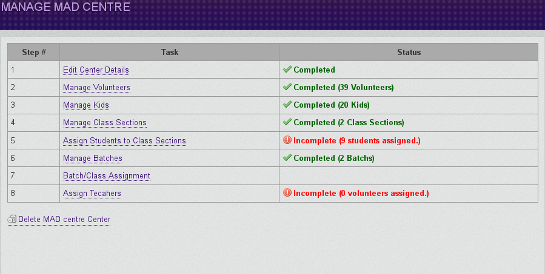
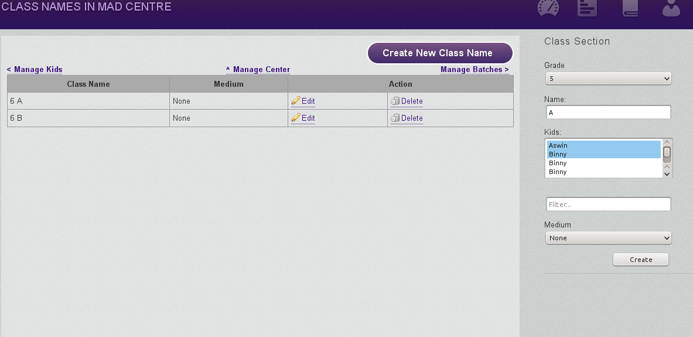
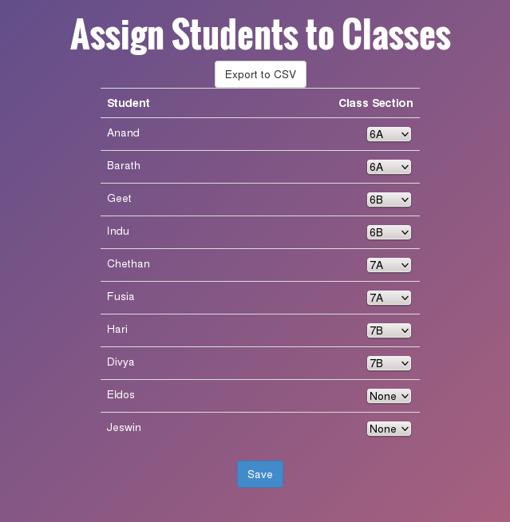

Student Grouping in MADApp
Section 1: The Center Management Page
First, get to the Center Management Page - this has all the necessary pages under.
Login > Ed Support > Center Management
Click Manage on the Center you want to do the grouping for.
I'm assuming you already have Volunteers on MADApp - I'm not covering that.
If you have added kids already, skip to Section 3. If not, continue.
Section 2: Adding Kids
Click on Manage Kids - the 3rd link.
If there is just a few kids to add to this center(say 3 or less), click on Add Kids - enter their details one by one.
If you have more kids to add, you'll have to create a spreadsheet with all the kids you want to add.
You'll need the list of all the kids in an Excel/Spreadsheet. I'm going to assume that its in a Google Spreadsheet. Make sure that the Spreadsheet is in this format...
Name, Sex, Birthday, Description
Sex should be 'm' or 'f'.
Birthday should be in the format YYYY-MM-DD
You can leave the Birthday and Description empty if you don't have that data.
Now, open the spreadsheet, Go to File > Download As > Comma Separated Values(.csv, current Sheet)
This will download a version of that sheet to your system.
Now, Click on Import Kids. Then upload that file by clicking on 'Browse...' and selecting the file you just downloaded. Make sure you have the right center selected in the Center Drop down.
It will show you a page where you can confirm the fields. Make sure the name column corresponds to the name of the kid, the sex column to the sex, etc. Once that is done, click on 'Import Data'
This will add all the kids in your CSV file to the center.
Section 3: Class Sections
Click on Manage Class Sections - make sure all class sections are present. If not, add it by clicking on the Add Class Section button.
Select the kids in that class by holding down Control while clicking on the Students name. This is optional - there is another way to add students to Classes - we'll get to that in the next section. For now, just make sure you have all the Classes needed in this center.
Click on the button 'Create' when you are done.
Section 4: Assigning Students to Class Sections.
Go back to the Center Management page by clicking on the Back button on your browser.
This page has all the students in this center with a drop down signifying which Class they belong to. Go thru the entire list making sure the mappings are correct. If not, change the class section and click on the 'Save' button at the bottom of the page.
If you wish to do the class allocation in a spreadsheet, then just use the Export to CSV option to get the data into CSV file which can be opened in Excel or other similar spreadsheet applications.
Section 5: Batches
Come back to the Center Management page(See section 1 if you are not sure how to go that page).
Now click on Batch Management. Make sure all the necessary batches are present. This data is copied over from last year. You might have to update it.
Once you are done, go back to the Center Management page.
Section 6: Batch/Class Assignment
Clicking on Batch/Class Assignment will take you to a page that list all the Batches and Class Sections in that center. Just make sure all the Batch class mapping are correct.

Section 7: Teacher Assignment
Click on the Assign Teacher Link. This page will show all the Volunteers who has the teacher User Group. You can map them to the correct Batch, Class Section and the subject they'll be taking there itself.

If any teacher is not taking class in that center, leave the batch drop down empty and they wont be assigned to this center.
Click on Save when done.